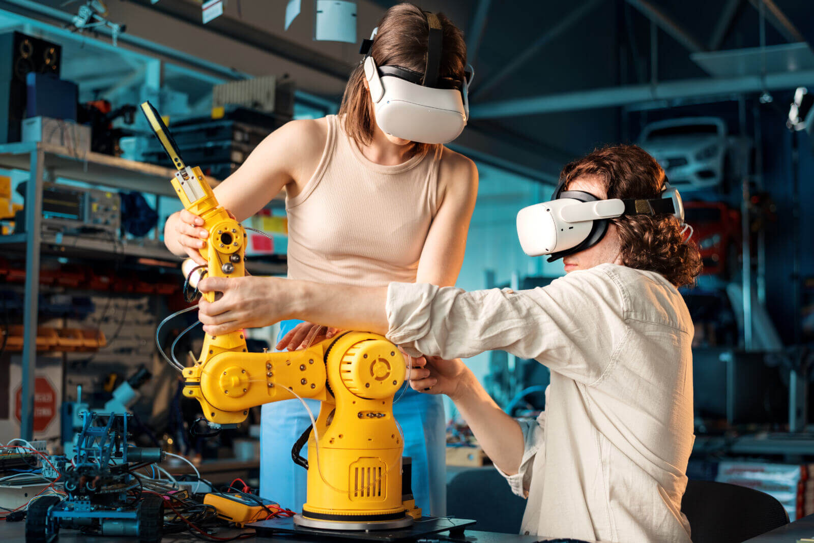

PUMA 560
El doctor Yik San Kwoh utilizó un brazo robótico industrial para guiar con precisión una biopsia neuroquirúrgica.
Usos, ventajas y aplicaciones de una tecnología que combina ingeniería, electrónica, inteligencia artificial y ciencias de la salud.

INTRODUCCIÓN
La robótica médica combina la ingeniería mecánica, la electrónica, la inteligencia artificial y las ciencias de la salud para crear sistemas capaces de asistir, complementar o incluso superar las capacidades humanas en tareas clínicas.
Hoy existen brazos mecánicos para cirugía, exoesqueletos para rehabilitación, prótesis avanzadas, robots de transporte y sistemas de desinfección. Estas tecnologías forman parte de la práctica médica moderna en distintos contextos.
CONTEXTO HISTÓRICO
El doctor Yik San Kwoh utilizó un brazo robótico industrial para guiar con precisión una biopsia neuroquirúrgica.
Sistemas comerciales como el posteriormente conocido como Da Vinci abrieron camino a la cirugía mínimamente invasiva asistida por robot.
La robótica se extiende a cirugía, rehabilitación, prótesis, logística, desinfección, telemedicina y asistencia con IA.
APLICACIONES PRINCIPALES
El cirujano controla brazos robóticos desde una consola. Los instrumentos realizan movimientos precisos y a escala reducida, mientras el sistema filtra el temblor natural.
Urología · cardiología · ginecología · oncología · cirugía digestivaEstructuras externas motorizadas que asisten o restauran el movimiento, especialmente en lesiones medulares, accidentes cerebrovasculares y otras afecciones neuromotoras.
Las prótesis mioeléctricas captan señales eléctricas de los músculos residuales y las traducen en movimientos más naturales e intuitivos.
Robots autónomos transportan medicamentos, muestras, ropa y alimentos, liberando al personal de tareas repetitivas de traslado.
Robots móviles con luz UV-C recorren áreas críticas para ayudar a eliminar virus, bacterias y otros microorganismos de superficies y del aire.
La robótica se integra con IA en telemedicina, asistentes virtuales, gestión de datos clínicos y apoyo a personas con discapacidad.
VENTAJAS CLAVE
El sistema puede filtrar el temblor y ofrecer visión tridimensional aumentada del campo quirúrgico.
Las incisiones pueden ser mucho más pequeñas que en la cirugía abierta tradicional.
En determinados procedimientos, los pacientes pueden requerir menos internación y retomar antes sus actividades.
Las heridas de menor tamaño reducen la exposición a microorganismos externos.
El profesional puede operar sentado y en una posición ergonómica durante intervenciones largas.
Los robots de logística y desinfección liberan tiempo del personal para tareas asistenciales.
LIMITACIONES Y DESAFÍOS
La formación para alcanzar competencia plena puede requerir numerosos procedimientos y, durante ese período, aumentar la duración de las cirugías.
Se han registrado fallas mecánicas en análisis de cirugías robóticas, aunque una proporción mucho menor obligó a convertir la intervención.
La inversión en equipos, mantenimiento y capacitación es significativa y no siempre está claro que el costo adicional produzca mejoras clínicas frente a técnicas convencionales.
Algunas áreas necesitan más estudios a largo plazo y existen desafíos de inversión, formación y equidad de acceso.
Un punto importante: según el informe, los sistemas robóticos actuales no operan de forma autónoma. Son herramientas que amplían las capacidades del profesional, quien mantiene el control y la responsabilidad clínica.
06 · CONCLUSIÓN
Desde el quirófano hasta la farmacia hospitalaria, la robótica aporta precisión, menor invasividad, recuperación y optimización de recursos. Al mismo tiempo, el costo, la formación especializada y la necesidad de más evidencia a largo plazo siguen siendo desafíos para una incorporación equitativa.
FUENTES CONSULTADAS EN EL INFORME